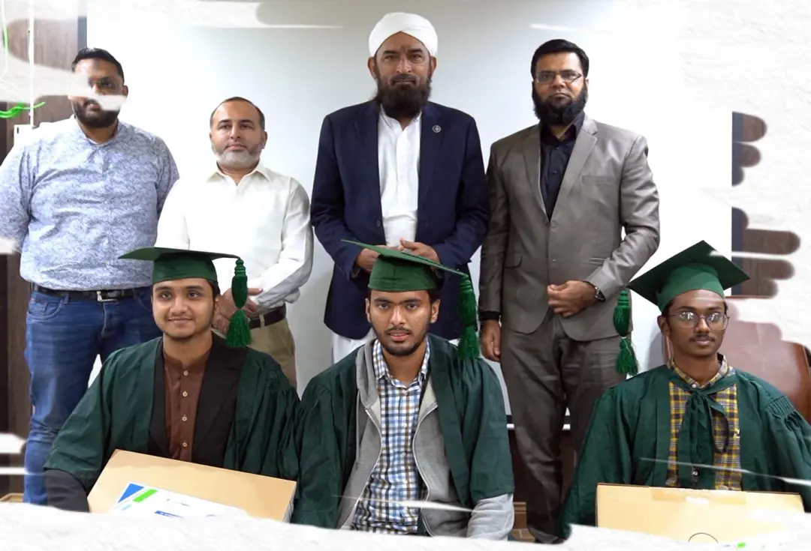

Saylani Welfare International Trust is a Pakistani non-profit organization founded in 1999. It provides humanitarian and welfare services in Pakistan and also operates internationally through offices and donation networks in countries like the UK, USA, Canada, Turkey, and UAE.
Main services provided by Saylani around the world include: Food programs — free meals, Dastarkhwan services, ration distribution, Ramadan food drives, and emergency food relief. Healthcare services — hospitals, clinics, blood banks, thalassemia centers, mobile medical camps, X-ray and laboratory facilities. Education & IT training — schools, Quran academies, vocational training, and advanced IT programs like SMIT (Saylani Mass IT Training). Clean water projects — RO plants and water supply initiatives for poor communities. Disaster relief — flood relief, emergency aid, Gaza support campaigns, shelter assistance, and rehabilitation work. Social welfare — orphan support, old age homes, housing schemes, marriage assistance, job banks, and microfinance help. Economic empowerment — vocational skills training, mobile repairing, textile training, motorbike mechanic programs, and employment assistance. According to Saylani, they serve hundreds of thousands of people daily and operate across 1,100+ areas in Pakistan with international support offices.
